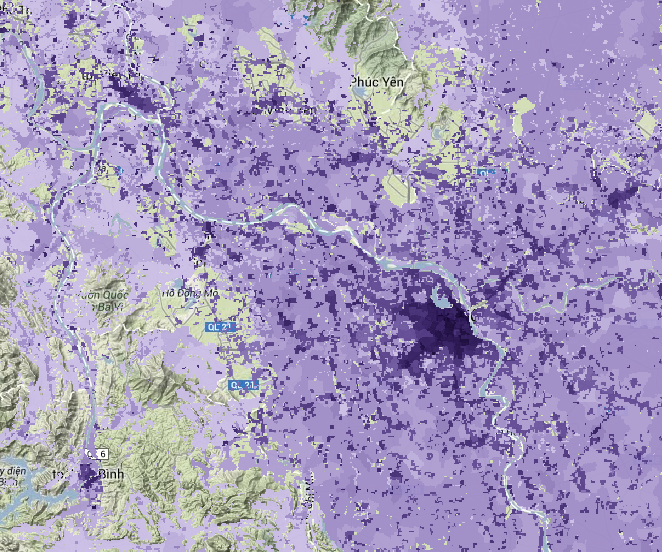
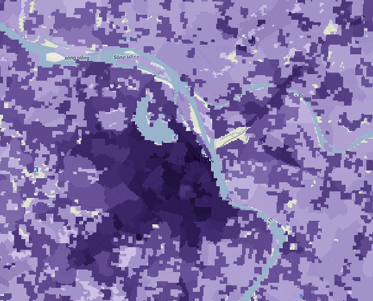
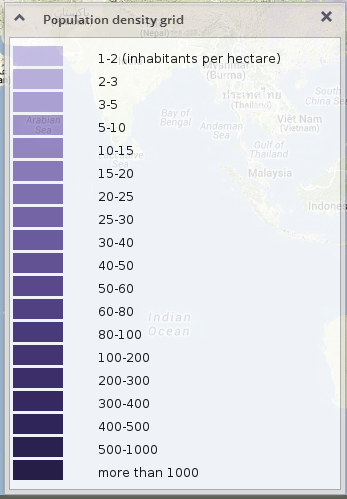
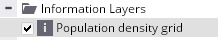

Regional scope: AsiaPop population data for countries in the EAPAC region
This scope provides the lowest level of detail and largest area. In the frame of this scope, only population data come into analysis. The analysis begins at the East Asia and Pacific Region level.
Aggregated data incorporated in the application have been calculated using zonal analysis based on source population rasters from the AsiaPop (part of WorldPop) dataset. Total populations for the years 2000 and 2010 and population development have been calculated.
The following picture shows the WorldPop (AsiaPop) grid representing population density (persons per hectare) in the wider Hanoi area.

These WorldPop rasters (with population density recalculated into 19 categories and 0% opacity for areas with population density lower than 1 person per hectare) are displayed in the application as an Information Layer.

WorldPop data are also presented in the following Scopes and Themes:
- National: Population in built-up areas
- Local: Population
- Global Urban Footprint
as a source of additional information describing population density.
They are displayed as rasters and also are used as source for aggregation of population values for administrative units.